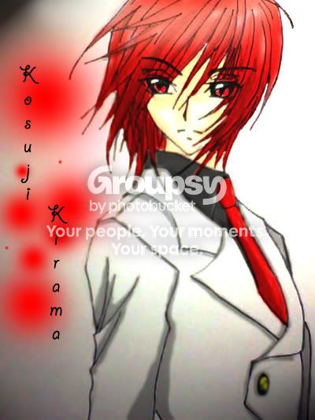

Legendary Of Kirama
ดวงตะวันที่หลงไหลความมืดยามราตรี

หากสามารถขอพรจากดวงดาวหรือจันทราได้1ข้อ....
...ตัวผมจะไม่ขออะไรมากมาย...คืนมาได้ไหม ช่วยคืน “เธอ”
กลับมาหาผม...ทั้งชีวิต...ผมไม่เคยร้องขอสิ่งใด แต่....
หากเพื่อขอให้เธอกลับมา...แม้ต้องให้ทิ้งสิ่งใด..ผมก็ยินดี...
แต่ถ้าหาก...คนที่เคียงข้างเธอ...ไม่ใช่ผม แล้วล่ะก็
ผม...ก็ยินดี...ที่จะ....
ทำลายเธอด้วยมือคู่นี้.....
แม้ว่า....ใจผม จะเจ็บเพียงใด ก็ตาม........
ณ คฤหาสน์ ผม โคซึจิ
ในค่ำคืนนี้ แตกต่างกับคืนอื่นๆ คืนนี้เป็นคืนสำคัญ คืนหนึ่ผมึจิเลยก็ว่าได้ เพราะนี่ เป็นวันคล้ายวันเกิดของลูกชายคนเล็กทายาทคนสำคัญ ผม ในค่ำคืนนี้ ต่างมีแวมไพร์ผม่างๆมาร่วมแสดงความยินดีมากมาย แต่ว่าเจ้าของวันเกิดนั้น กลับมานั่งหงอย อยู่ที่ริมระเบียงที่ไร้ผู้คนเส้นผมสีโลหิต ปลิวไปกับสายลมยามราตรี ดวงตาสีแดงฉาน เหม่อมองออกไปไกลแสนไกลไม่อาจรู้ได้ว่าจะจบลงที่ใด ในแววตานั้น เผยให้เห็นความเหงา ออกมามากมายโดยไม่ต้องสังเกต แม้จะไม่มีน้ำตาก็ตามที ริมฝีปากบาง ถอนหายใจ ครั้งแล้วครั้งเล่า ในแบบที่เด็กอายุ7ขวบ ไม่น่าจะทำ จนน้าสาวที่นั่งมองอยู่นาน ทนไม่ไหวกับพฤติกรรมนั้น ต้องเดินเข้ามาหาด้วยความสงสัยว่า หลานชายที่อายุเพียงเท่านี้ จะมีเรื่องเครียดอะไรมากมายจนมานั่งหงอยอยู่แบบนี้
“นี่คิรามะคุงทำไมมานั่งอยู่ตรงนี้คนเดียวละจ๊ะ”น้ำเสียงอ่อนหวานพร้อมกับรอยยิ้มจากหญิงสาวสูงวัยถูกส่งมาให้กับผม ในตอนนั้นผมยังเด็กยู่เลย มืออันอ่อนโยนของเธอลูบผมสีโลหิตของผมอย่างอ่อนโยน “วันนี้น่ะ เป็นวันเกิดของคิรามะคุงนี่ แล้วทำไม ไม่ไปร่วมกับแขกในงานนี้ล่ะจ๊ะ”
ผมก้มหน้าลงมองพื้นระเบียงหินอ่อนที่ไร้การแต่งแต้มใดๆ สีหน้าลำบากของผมมันคงจะเด่นชัดจนหญิงคนที่ได้ชื่อว่าเป็นน้าต้องปลอบผมอีกครั้ง
“คิรามะคุงอยากจะได้อะไรในวันเกิดหรือเปล่าจ๊ะ” แต่เด็กน้อยกลับส่ายศีรษะอย่างแรงจนน้าสาวแปลกใจ “คิรามะคุงไม่อยากได้อะไรเลยหรือจ๊ะ หรือว่าเธอคิดว่าในโลกใบนี้ไม่มีอะไรที่น่าครอบครอง”
ผมในตอนนั้นอยากจะอ้าปากบอกกับคุณน้าเหลือเกิน ไม่ใช่ว่าผมไม่มีสิ่งที่ต้องการในชีวิต แต่ตอนนี้ ณ ที่นี้สิ่งที่ผมคิดว่าสวยที่สุดต้องการในชีวิตของผมมันไม่ได้อยู่ที่นี้เสียแล้ว
สิ่งนั้นไปเสียแล้วไปจากผมในที่ไกลแสนไกล ด้วยสีหน้าอันเศร้าหมอง นัยน์ตาสีสวยของเธอหม่นลงเมื่อมองผมจนลับตา หยาดน้ำตาของเธอร่วงลงมาราวกับสายฝน เพียงเท่านั้นผมก็รู้สึกเจ็บแปลบแปลกๆภายในอกในตอนนั้นมันทำให้ผมคิดอยากจะเปลี่ยนแปลงตัวเอง อยากจะเข้มแข็งให้มากกว่านี้
ถ้าผมเข้มแข็งมากกว่านี้สิ่งนั้นก็คงจะอยู่กับผมใช่ไหม
ถ้าผมแข็งแรงจนชนะทุกๆคนแล้วสิ่งนั้นก็จะไม่ร้องไห้อีกแล้วใช่ไหม
ถ้าผมแข็งแกร่งมากกว่านี้ผมจะได้สิ่งนั้นมาครอบครองใช่ไหม...
หลังจากวันนั้น10ปีผมก็เข้าเป็นนักเรียนคลาสแวมไพร์ของคุโรอิจิ ไฮสคูล ผมเบื่อทุกอย่าง ถึงแม้จะไร้ซึ่งความลำบาก แต่ผม สูญเสียสิ่งที่ต้องการไปแล้ว เพื่อที่สักวันมือนี้ของผมจะได้ไขว่คว้ากับสิ่งนั้นได้อีกคราหนึ่ง ผมจึงได้แต่เฝ้ารอปาฏิหาริย์จากพระผู้เป็นเจ้า
หากแต่ว่าเธอ จะยังคงเหมือนเช่นเดิมอยู่ไหม ถึงผมจะจำเธอได้ แต่นั่นมันก็นานแสนนานมาแล้ว สิ่งที่จำได้ดี คือดวงตาสีนิล และเส้นผมสีรัตติกาล น้ำเสียงอ่อนหวาน แต่ว่า...ทำไมกันนะ มีเพียงแค่ชื่อของเธอเท่านั้น ที่มันจางหายไปจากความทรงจำของผมอย่างไร้ร่องรอย ราวกับมันไม่เคยถูกบันทึกอยู่เลยแม้แต่น้อย
ทั้งๆที่ พยายามนึกแทบตาย หัวแทบจะระเบิด หมกตัวอยู่ในหอจนเหมือนพวกจิตตก ไม่สุงสิงกับใคร ไม่แม้จะออกมาทานอะไรเลย ผมซึ่งเป็นพวกคลาสเอ เรื่องแบบนี้ ก็พอได้ แต่ก็ไม่สบายเท่าไหร่นัก ผลที่ได้นั่น กลับยังคงน่าเศร้า คือ ผมกลับนึกอะไรไม่ออกเลย
ผมใช้ชีวิตอยู่ในโรงเรียนไปวันๆ โดดเรียนเป็นกิจวัตร มีเรื่องทะเลาะวิวาท พอเป็นพิธี มันไม่เสียหายอะไร ในเมื่อผลการเรียนของผม ยังคงติดอันดับ1ใน10 น.รผลการเรียนดีเด่น ไม่มีอาจารย์คนไหนคิดจะเอ่ยปากตำหนิ จะมีก็แค่คนเดียว ที่ผมไม่อยากจะยุ่งด้วย อาจารย์ฝ่ายปกครอง ทาเคชิ อาคาโดะ
แต่แล้วในวันหนึ่ง ที่ผมโดดเรียนเข้าไปอยู่ในห้องสมุด สถานที่ ที่เงียบสงบที่สุดในตอนนี้ ทั้งๆที่มันน่าจะเป็นเช่นนั้น แต่วันนี้มันกลับมีใครอีกคนอยู่ที่นั่นก่อนแล้ว....
ราวกับพระเจ้าเล่นตลก ในเสี้ยวนาทีนั้นที่ผมชะโงกมองผ่านชั้นหนังสือที่มีแต่หนังสือเรียงรายมากมาย ผมก็ได้พบกับสิ่งที่ผมเคยตราตรึงในหัวใจ สิ่งที่ผมเคยคิดว่ามันงดงามที่สุดบนโลกใบนี้ และอยากจะครอบครอง
เพียงแค่เห็นแค่เพียงแวบเดียวผมก็จำได้ในทันทีถึงแม้ว่าเด็กตัวเล็กๆนั้นจะเติบโตจนความสูงอยู่ที่ประมาณบ่าของผมก็ตามที แต่นัยน์ตาสีนิลชวนหลงใหลคู่นั้นยังคงเดิม เธอยังงดงามและดูบอบบาง...
แม้แต่ยามตื่นตระหนกสิ่งนั้นก็ยังสง่างามสมกับเป็นคุณหนูผม์ชั้นสูง ผมยิ้มเล็กน้อยให้กับการพบกันครั้งใหม่ของเรา ถึงแม้ที่นั่นจะเป็นห้องสมุดที่ไม่น่าพิสมัยเท่าใดนัก แต่ราวกับว่าผมได้เห็นทุ่งดอกไม้อยู่ใกล้ ใบหน้าของเธอยังทำให้ผมสดชื่นได้เสมอ
เธอจะรู้ไหมนะเพราะเห็นหน้าเธอจึงทำให้ผมยิ้มได้..บางทีผมคงเป็นผู้ชายโง่ๆที่พอมองอะไรที่สวยงามจนเคลิ้มแล้วจะเผลอยิ้มให้ ..แต่ก็นะผมก็เป็นแบบนี้แหละ
“เอ่อ...คุณ” ริมฝีปากบางเอ่ยออกมาก่อนจะเงยมองหน้าผม
“อ่า ขอโทษครับ” ผมได้แต่หลีกทางให้ร่างนั้นเดินผ่านไป เธอคงจะจำผมไม่ได้เลยสินะ แต่การที่ผมได้พบเธอในเวลานี้ ที่นี่ ก็เป็นสิ่งยืนยันได้ดีแล้วว่า ยังไงซะ เราก็ยังอยู่โรงเรียนเดียวกัน ต่อไปก็แค่ อยู่ห้องไหน เท่านั้น
แต่ก็นะ หลังจากนั้น1ปี พวกคุณอาจจะไม่เชื่อ ผมกับเธอน่ะ สนิทกันดีเลยล่ะ แต่...เธอ คนนั้นน่ะ ก็ยังคงจำผมไม่ได้เช่นเดิม นิสัยน่ะเหรอครับ ไม่ต้องพูดถึงเลย ทำเอาผมช็อคไปเหมือนกัน
คุณลองคิดดูสิครับ จากความทรงจำ เธอ น่ารัก และแสนดี แต่บัดนี้น่ะ สามารถใช้ผมเยี่ยงทาสได้เลยล่ะ แถมยังขี้งอนอีกด้วย มั่นใจในตัวเองสูงสุดๆแบบฉุดไม่อยู่ เฮ้อ น่าเศร้าจัง
ตอนนี้ผมมีเรื่องที่กำลังคิดอย่างหนัก บรรดาแฟนคลับของผม บอกผมว่า ผมน่ะเป็นเหมือนดวงตะวัน ร้อนแรง สดใส และ มีความน่ากลัวอยู่ด้วย ก็อาจจะเป็นแบบนั้น ส่วนเธอ
โอริฮิเมะ
..เธอรู้ไหมเธอมันช่างน่าหลงใหล และลี้ลับเฉกเช่นเดียวกับสีดำยามรัตติกาลที่ขับให้จันทราโดดเด่น แต่ทว่าสิ่งที่งดงามจริงๆของท้องฟ้ายามค่ำคืนนั้นหาใช่จันทราที่โดดเด่นไม่ กลับเป็นเพียงความมืดที่สงบนิ่งและน่าหลงใหลหากเผลอไปจ้องมันเข้า ...อาจจะหลงมันเข้าก็ได้
และตอนนี้น่ะ มีคนๆหนึ่ง ซึ่งเป็นคนที่ โอริฮิเมะ
ชอบผมก็ไม่รู้หรอกว่าคนคนนั้นเป็นใคร และบางที เธอก็จะมาปรึกษาผม นั่นน่ะ ผม ไม่ชอบเอาซะเลย แต่ ผมก็ทำได้เพียงแค่ ยิ้ม พร้อมกับทำท่าทีดังเช่นปกติเท่านั้น ช่วงเวลานั้นผมรู้สึกอยากจะทำลายสิ่งที่ผมปรารถนามากที่สุดยิ่งกว่าสิ่งใดในโลก ให้แตกสลายย่อยยับไปด้วยน้ำมือของตนเอง
ความมืดมิดที่ล่อหลอกให้แสงสว่างที่แรงกล้าเช่นตะวันคล้อยตามมันได้
ความน่าหลงใหลที่พัธนาการดวงตะวันให้ถูกบดบังในยามราตรี
ก่อนที่จะโผล่พ้นขึ้นขอบฟ้ายามที่รัตติกาลอันงดงามได้จากไป
ความมืดมิดที่ทำให้ผมต้องหลงใหลได้เพ้อไปกับมัน
ผมอยากจะได้ ..ผมอยากที่จะครอบครองมัน...
แต่ทว่ามันไม่เคยได้เป็นจริงเอาเสียเลย
ถ้าหากไม่ได้แล้ว..มันก็ไม่มีค่าอะไรต้องปกป้องอีกแล้ว ..ถ้าหากนี่ไม่ใช่ของผมแล้วละก็ ..ถ้าหากจะมีคนอื่นได้ครอบครองสิ่งนี้ไปนอกจากผมแล้วละก็
ผมก็จะขอทำให้มันเป็นของผมชั่วนิจนิรันดร์
โอริฮิเมะ ..หากเธอไม่เป็นของฉันแล้วละก็..ฉันก็จะทำลายเธอด้วยมือนี้เอง….
07/01/2009
By…Kosuji Kirama
End…Kirama Special…
แหะๆ ประเดิมคนแรกจากการจับฉลาก (อั่กกกก /โดนตบ) จับได้คิรามะคุงคนแรก ยูริรินได้แต่กลืนน้ำลายอย่างยากลำบาก นั่งอ่านใบสมัครของคิรามะคุง วนไปวนมาหลาย100รอบ เพื่อจะนั่งละเลงแฟนอาร์ต (โฮกกกกก) พยายามให้อิมเมจมันเท่!! คิรามะต้องเท่ดิ ใช่มะ?
ทว่า แต่งไปแต่งมา พอจบ ส่งไปให้เพื่อนลองอ่าน มานกลับบอกว่า
“แกนี่ชักจะแต่ง จิตๆ ยังไงชอบกล” ง่ะ T^T
แหม ก็กะนิสัยคิรามะคุง ละก็ นั่งคำนวณ คิดไปคิดมา นิสัยแบบนี้มักจะเป็นพวกรักแรง เลยสนองความคิดตัวเองซะ
ส่วนรูปแฟนอาร์ต ก็เช่นเคย กล้องมือถือ เครื่องสแกนโดนอุ้ม TT^TT
ตอนนี้ อ่านตาลายมั้ยง่ะ รู้สึกมันติดๆกันยังไงชอบกล